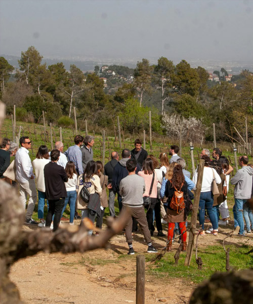

Gastronomía
Esta Navidad, vive experiencias gastronómicas únicas con catas de vinos, desayunos de payés, showcookings navideños y maridajes especiales. Disfruta de la mejor cocina y los mejores vinos locales en un ambiente festivo y tradicional, ideal para compartir con amigos y familiares.

Saborear la Navidad

Descubre la bodega en la que nace el único vino de Barcelona. En la masía de Can Calopa, en Collserola, podrás conocer la tradición vinícola de la ciudad y el proyecto de agricultura social de la cooperativa L'Olivera, mientras degustas sus vinos y aceites disfrutando de magníficas vistas al Tibidabo.
Desayuna en Collserola y descubre los productos de los últimos artesanos de la sierra de Barcelona. Visita la bodega de Can Calopa, conoce su proyecto agroecológico y disfruta de un desayuno de payés con vinos, aceites y productos locales.

Disfruta de una experiencia única con Brunch & Wine: visita la bodega y prueba un brunch maridado con vinos y cavas, rodeado de viñedos y cerca del mar Mediterráneo ¡Ideal para disfrutar con amigos y familiares!
La 11ª edición de la Ruta Gastronómica de Cabrils, bajo el lema 'Platillos que vuelan', cuenta con la participación de restaurantes como Can Rin, Il Forno di Papá, La Concordia, La Mordedura, L'Hort Cabrils, Hostal de la Plaça , Nou Gras y Sal i Pebre.

Aprende a elaborar platos festivos con ingredientes locales frescos mientras disfrutas de una experiencia en familia. Un momento ideal para compartir, aprender y hacer crecer la tradición culinaria navideña.

La Feria de la Purísima de Gironella reúne artesanía y tradición navideña. Se puede degustar la escudella de maíz escuadrado, un plato típico de la comarca, y disfrutar de la exposición de belenes. La feria se celebra en el centro histórico de la villa.
Vivencia showcooking especial con el cocinero Jacint Carafi, Cintet. Enseña a preparar entrantes y platos fríos para las fiestas con productos locales. El equipo de Caram Caram presentará la sesión. Destacarán la historia de los productos y comercios de Sant Sadurní. La sesión incluye una cata de tres recetas maridadas con cava.
Para disfrutar de una cata de productos de proximidad en el Bages, con vinos de la DO Pla de Bages y platillos típicos del Geoparc de la Catalunya Central, como la mousse de requesón con tocino o las judías de Castellfollit con butifarra de setas y rocas de Sant Benet.

En la Fira del Gall de Vilafranca del Penedès, la Escola d’Enoturisme de Catalunya organiza la cata "Bombolles que enamoren", donde se descubren los mejores maridajes de espumosos con todo tipo de platos clásicos navideños.

¡Ven a descubrir el alioli de membrillo, un producto único de la cocina de montaña! La feria organiza un concurso de este tipo de alioli, demostraciones en vivo, una muestra de productos locales, arte y artesanía. Y el desayuno típico donde destaca el delicioso membrillo.
Sumérgete en los misterios de la trufa en Centelles, una villa con un rico legado de brujería asociado a la utilización de este hongo, al que se le conferían poderes mágicos. En la feria podrás descubrir sus propiedades culinarias y conocer las historias de pociones y ungüentos elaborados con este hongo.

Vilafranca celebra la tradicional Fira del Gall Negre del Penedès, una raza autóctona de aves de corral con una carne excelente. En la feria, un mercado de aves de corral, pueden degustarse platos elaborados con este gallo de raza y maridarlos con vinos de la DO Penedès.